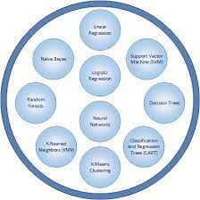

1. Programming Fundamentals
Begin by learning the fundamentals of programming concepts like variables, data types, control structures, and functions. Choose a programming language such as Python or R, which are commonly used in AI/ML development. Understand how to manipulate data and work with libraries and frameworks specific to AI/ML.

2. Mathematics and Statistics
Develop a strong foundation in mathematics and statistics, as they form the backbone of AI/ML algorithms. Learn concepts such as linear algebra, calculus, probability, and statistical analysis. Understand how these concepts are applied in machine learning algorithms and models.

3. Machine Learning Algorithms
Study and implement various machine learning algorithms such as linear regression, logistic regression, decision trees, random forests, support vector machines, and neural networks. Understand the working principles and mathematical foundations of these algorithms. Learn about model training, evaluation, and hyperparameter tuning.
4. Deep Learning and Neural Networks
Dive deeper into deep learning and neural networks, which are a subset of machine learning. Learn about different types of neural networks, including feedforward, convolutional, recurrent, and generative models. Understand popular deep learning frameworks like TensorFlow and PyTorch. Explore applications of deep learning in areas like computer vision, natural language processing, and recommendation systems.
5. Data Preparation and Feature Engineering
Gain expertise in data preprocessing, cleaning, and feature engineering techniques. Learn how to handle missing data, outliers, and categorical variables. Explore methods for feature extraction, dimensionality reduction, and data transformation. Understand the importance of data quality and its impact on model performance.
6. Model Evaluation and Deployment
Learn how to evaluate machine learning models using performance metrics like accuracy, precision, recall, and F1 score. Understand techniques for model selection, cross-validation, and handling imbalanced datasets. Explore strategies for deploying machine learning models into production environments. Learn about cloud-based services, containerization, and model serving frameworks.
7. Advanced Topics in AI/ML
Expand your knowledge by exploring advanced topics in AI/ML. This may include natural language processing, reinforcement learning, unsupervised learning, and time series analysis. Stay updated with the latest research papers, techniques, and advancements in the field. Engage in projects and competitions to apply your skills to real-world problems.